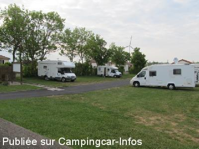
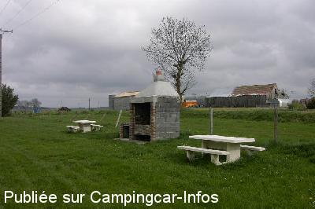
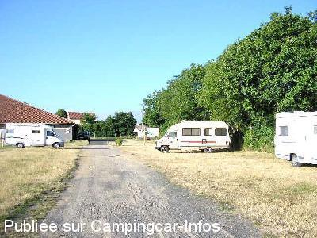
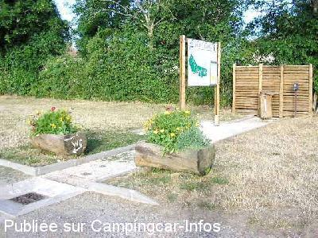

ASN = Aire de services avec stationnement nuit possible de :
LA CHAPELLE LAURENT
(N° 674)
Accès/adresse :
Le Grand Champ D10
Parking de la salle polyvalente
15500 LA CHAPELLE LAURENT
Parking de la salle polyvalente
15500 LA CHAPELLE LAURENT
Latitude : (Nord) 45.18102° Décimaux ou 45° 10′ 51′′
Longitude : (Est) 3.24414° Décimaux ou 3° 14′ 38′′
Tarif : Gratuit
Type de borne : Autre
Services :


Commerces
Autres informations :
10 emplacements sur herbe
Pas de services en période de gel
Tel : +33(0)471 731 273

Le 03/06/2015 par jose 07

Le 30/04/2006 par FAROME 76

Le 05/08/2005 par

Le 05/08/2005 par
de
Eve
le 13/07/2014 :
Aire agréable et calme.La fromagerie à la sortie du
village propose de nombreux fromages à des prix très
abordables, ne pas oublier de visiter l'église, beau
choeur à l'intérieur.
Aire agréable et calme.La fromagerie à la sortie du
village propose de nombreux fromages à des prix très
abordables, ne pas oublier de visiter l'église, beau
choeur à l'intérieur.
de
jose 07
le 01/12/2012 :
arrivé le 31/07/12 vers 22h, stationné en compagnie de 4 autres cc, nuit tranquille. le matin j'ai vidangé les eaux grises et fait le plein d'eau. bien que gratuite j'ai glissé mon obole dans la boite située vers le robinet d'eau. passage par la fromagerie ouverte toute l'année, nombreuses varietés de fromage a un prix très abordable. merci a la commune pour son hospitalité. le lendemain vers midi repris la route direction Rocamadour.
arrivé le 31/07/12 vers 22h, stationné en compagnie de 4 autres cc, nuit tranquille. le matin j'ai vidangé les eaux grises et fait le plein d'eau. bien que gratuite j'ai glissé mon obole dans la boite située vers le robinet d'eau. passage par la fromagerie ouverte toute l'année, nombreuses varietés de fromage a un prix très abordable. merci a la commune pour son hospitalité. le lendemain vers midi repris la route direction Rocamadour.
de
jlch 57
le 25/08/2012 :
Petite aire bien sympatique,à part le boulanger,pas de commerces,se ravitaillier avant,par contre marchand de fromage important et pas chère.merçi a cette commune de nous recevoir dans de si bonnes conditions.Ne pas oublier la petite tirelire mis a disposition pour l'eau.
Petite aire bien sympatique,à part le boulanger,pas de commerces,se ravitaillier avant,par contre marchand de fromage important et pas chère.merçi a cette commune de nous recevoir dans de si bonnes conditions.Ne pas oublier la petite tirelire mis a disposition pour l'eau.
de
fcdeux
le 11/03/2012 :
Aire très réduit de part une construction de vestiaires en cours lors de notre passage en juillet 2011. Il ne reste qu'une dizaine d'emplacements le long d'un terrain de foot.
Eau gratuite.
Aire très réduit de part une construction de vestiaires en cours lors de notre passage en juillet 2011. Il ne reste qu'une dizaine d'emplacements le long d'un terrain de foot.
Eau gratuite.
de
philr
le 25/07/2011 :
Passage 19>21/07/2011. Suite à Massiac, sommes allés à La Chapelle Laurent à qlqs kms. Présetée comme "Aire de stationnement" sur dépliant "Les Pays de St Flour", donc "sans services"; en fait c'est nettement mieux et avec services gratuits "artisanal", réalisées avec aide d'un C-cariste! L'Aire se trouve sur le stade. A conseiller.
Passage 19>21/07/2011. Suite à Massiac, sommes allés à La Chapelle Laurent à qlqs kms. Présetée comme "Aire de stationnement" sur dépliant "Les Pays de St Flour", donc "sans services"; en fait c'est nettement mieux et avec services gratuits "artisanal", réalisées avec aide d'un C-cariste! L'Aire se trouve sur le stade. A conseiller.
de
Papyvelo
le 18/06/2010 :
De passage mi Mai. Superbe endroit, très calme, nuit parfaite. La fromagerie à l'autre extrémité du village mérite notre visite et le boulanger est très accueillant. Merci à la commune.
De passage mi Mai. Superbe endroit, très calme, nuit parfaite. La fromagerie à l'autre extrémité du village mérite notre visite et le boulanger est très accueillant. Merci à la commune.
de
nous deux
le 22/09/2009 :
Nous y sommes passés début septembre, très calme, les jeunes du coin sont venus faire leur entrainement de foot jusqu'à 22 heures environ, dans le calme et la bonne humeur puis se sont séparés sans bruit. Borne gratuite, avec une tirelire pour participation aux frais, ce qui est plus que normal et dont nous nous sommes acquittés avec plaisir.
Nous y sommes passés début septembre, très calme, les jeunes du coin sont venus faire leur entrainement de foot jusqu'à 22 heures environ, dans le calme et la bonne humeur puis se sont séparés sans bruit. Borne gratuite, avec une tirelire pour participation aux frais, ce qui est plus que normal et dont nous nous sommes acquittés avec plaisir.
de
Rodger and Janice Deane
le 11/10/2008 :
Quiet aire overlooking the football pitch. However the real 'plus' for this site is the fromagerie in the village which apparently is open until 7p.m each night ( Don't know about the winter months) If you like French cheese then you must pay this location a visit. We came away with our fridge full!! Well worth the 12 km off route from the motorway.
Quiet aire overlooking the football pitch. However the real 'plus' for this site is the fromagerie in the village which apparently is open until 7p.m each night ( Don't know about the winter months) If you like French cheese then you must pay this location a visit. We came away with our fridge full!! Well worth the 12 km off route from the motorway.
de
JCL
le 16/08/2008 :
je n'y étais pas venu depuis longtemps, j'y ai trouvé le même calme et la même qualité de services.
Ne pas oublier le village et le fromage....
je n'y étais pas venu depuis longtemps, j'y ai trouvé le même calme et la même qualité de services.
Ne pas oublier le village et le fromage....
de
famille Sicard
le 17/04/2007 :
Aire superbe, bien placée en bordure d'un stade où le stationnement se fait sur l'herbe et donc très calme. Services gratuits et assez bien organisés. A recommander y compris pour consommer les produits locaux à la fromagerie du village.
Aire superbe, bien placée en bordure d'un stade où le stationnement se fait sur l'herbe et donc très calme. Services gratuits et assez bien organisés. A recommander y compris pour consommer les produits locaux à la fromagerie du village.